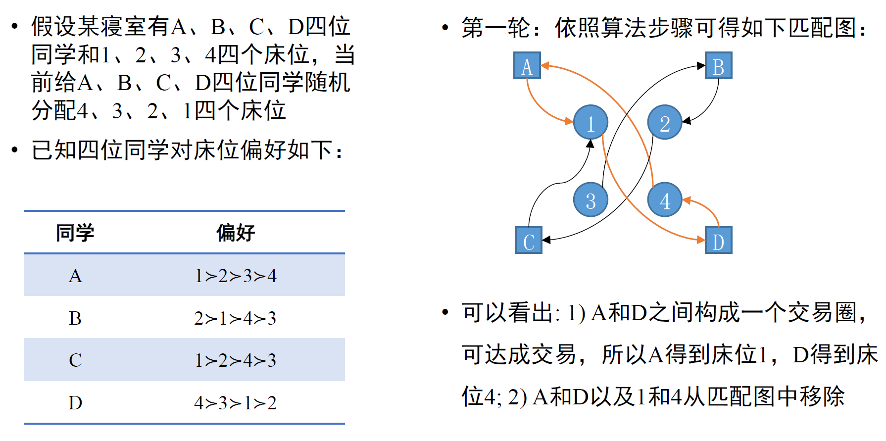
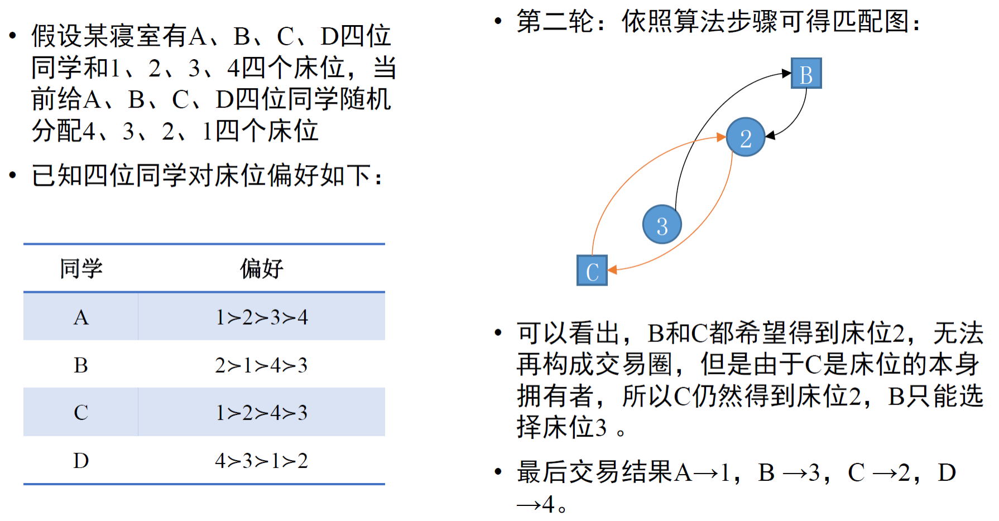

# 人工智能博弈
# 博弈论
博弈的要素：
- player
- strategy
- payoff
- rule
# 博弈策略求解
# 遗憾最小化算法（Regret Minimization）
下一步选择策略Σi 的概率 P:
P(σiT+1)=⎩⎪⎨⎪⎧∑σi′∈ΣiRegretiT,+(σi′)RegretiT,+(σi)∣Σi∣1if ∑σi′∈ΣiRegretiT,+(σi′)>0otherwise
为什么不直接选遗憾最大的：防止对手发现自己所采取的策略
例子
- 假设两个玩家 A 和 B 进行石头 - 剪刀 - 布（Rock-Paper-Scissors, RPS）的游戏，获胜玩家收益为 1 分，失败玩家收益为 - 1 分，平局则两个玩家收益均为零分。
- 第一局时，若玩家 A 出石头（R），玩家 B 出布（P），则此时玩家 A 的收益 μA(R,P)=−1，玩家 B 的收益为 μB(P,R)=1。
- 对于玩家 A 来说，在玩家 B 出布（P）这个策略情况下，如果玩家 A 选择出布（P）或者剪刀（S），则玩家 A 对应的收益值 μA(P,P)=0 或者 μA(S,P)=1。
- 所以第一局之后，玩家 A 没有出布的遗憾值为 μA(P,P)−μA(R,P)=0−(−1)=1，没有出剪刀的遗憾值为 μA(S,P)−μA(R,P)=1−(−1)=2。
- 所以在第二局中，玩家 A 选择石头、剪刀和布这三个策略的概率分别为 0、32、31。因此，玩家 A 趋向于在第二局中选择出剪刀这个策略。
- 第二局中，玩家 A 选择剪刀和玩家 B 选择石头情况下，第二轮石头、剪刀、布的 Regret 分别为 1，0，2，把前两轮的 regret 加起来计算概率，得到出石头、剪刀、布的概率分别为61、62、63。
# 双边匹配算法

在第一轮中，4 名男性分别向自己最喜欢的女性表白，而收到 3 人表白的女性 A 选择了自己最喜欢的男性 3，另一个收到表白的女性 B 选择了男性 4；在第二轮中，尚未匹配的男性 1 和男性 2 继续向自己第二喜欢的对象表白，收到表白的女性 B 选择了自己更喜欢的男性 2 而放弃了男性 4；同理，继续三轮表白和选择，所有人都找到了自己的伴侣，且所有匹配都是稳定的。可以看出，使用 G-S 算法得到了稳定匹配的结果。
# 单边匹配算法 - 最大交易圈

- 每个人指向最喜欢的物，每个物指向占有它的人
- 如果有圈，就把打成交易的人和物和相关边都删掉
- 继续
